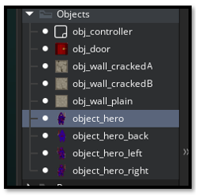
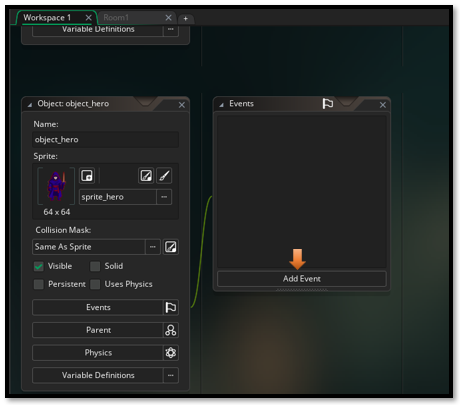
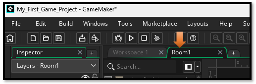
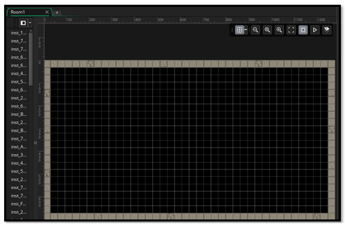
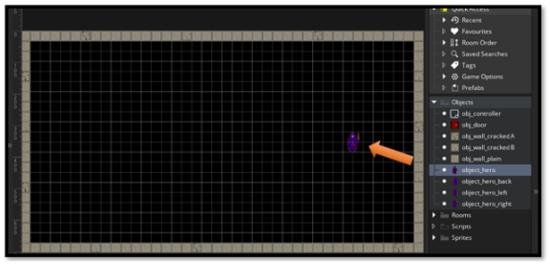
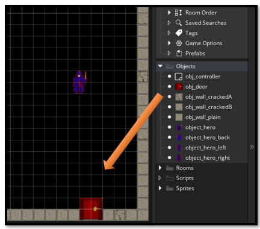
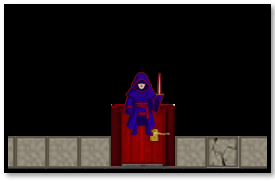

~5 Bringing in Your Object Hero~
2/9/2026

Where We Are Now
If you have been following along in this tutorial series, you would have noticed that we already have an object for the hero. In fact, we have 4 of them. The Hero, which is the front view, a right and left side view, and a back view of him. In this way as the hero makes his way around the room the face of the hero will be changing direction based on your view of him.
Getting the Hero to Move
If we were to place our hero into the room right now, he would just stand there and do nothing. That is because he does not have the code to do anything. Without writing some code for this hero guy, he is not going to go anywhere.
How to Write the Code
Double- click on the object_hero inside of the Asset Browser.

This will bring up the stuff that we need to work with him, in the center of the app. We want to click on Add Event. This will allow us to talk to Game Maker and tell it how we want this hero guy to behave when we do certain things.
We want to add a Step Event. Actually this is a Step-Step event because you will be choosing Step twice in the menu, as you can see from the image below.

Next, you will get this dialog box. Choose GML Code, as that is what we will be doing this tutorial in. GML is the Game Makers own language that it uses to code games. Hit Ok, to continue.

You can hold down the space bar and use your mouse to situate things around better in the workspace. With the space bar held down, just click on the top of an element you want to move around and move it to where it is fully visible inside of the workspace.
We will be writing our code inside of the large area that is now provided for us here.

Our hero needs to be able to move, using the arrow key, and also switch the sprite that it will be using based on its direction. After all, it doesn’t make any sense to have the hero facing you when he is walking away. He needs to have its back toward the player. And so now you see why we needed 4 sprites for our hero.
Oh, and by the way, this script code, will also have code for the door, which is the exit. We will be adding a door next. So, you might as well just leave the code in there. Because we will need to be placing it eventually, and this way you get to look at this hero step event in its entirety, right from the start.
The Step-Step Code
// --- Movement Input ---
var move_x = keyboard_check(vk_right) - keyboard_check(vk_left);
var move_y = keyboard_check(vk_down) - keyboard_check(vk_up);
var spd = 4;
var dx = move_x * spd;
var dy = move_y * spd;
// --- Collision Check ---
if (dx != 0 || dy != 0) {
// Check full diagonal move
if (!place_meeting(x + dx, y + dy, obj_wall_plain) &&
!place_meeting(x + dx, y + dy, obj_wall_crackedA) &&
!place_meeting(x + dx, y + dy, obj_wall_crackedB)) {
x += dx;
y += dy;
} else {
// Try horizontal only
if (!place_meeting(x + dx, y, obj_wall_plain) &&
!place_meeting(x + dx, y, obj_wall_crackedA) &&
!place_meeting(x + dx, y, obj_wall_crackedB)) {
x += dx;
}
// Try vertical only
if (!place_meeting(x, y + dy, obj_wall_plain) &&
!place_meeting(x, y + dy, obj_wall_crackedA) &&
!place_meeting(x, y + dy, obj_wall_crackedB)) {
y += dy;
}
}
}
// --- Check for Exit (always runs) ---
if (place_meeting(x, y, obj_door)) {
show_debug_message("✨ Hero reached the dungeon exit!");
// Example: room_goto_next();
}
// --- Sprite Switching ---
if (move_y < 0) {
sprite_index = sprite_hero_back;
} else if (move_x > 0) {
sprite_index = sprite_hero_right;
} else if (move_x < 0) {
sprite_index = sprite_hero_left;
} else {
sprite_index = sprite_hero;
}
Now you should have your script in there.

Go to the top of the workspace and switch your code from the Workspace1 tab to your Room1 tab, to view the room.

Now you should see your room with the outer wall

Moving to the Instances Layer
Go to the Layer panel and switch to the Instances layer. You can move this Instance layer to the top of the layer stack, just by clicking on it and dragging it to the top. Your hero object needs to go into the Instances layer and not the Outer Walls layer. So, make sure that is the one that you have selected.

Now slide your hero object out of the Asset Browser and into the room.
Now drag the door object out of the room and set it in the outer wall somewhere.
Test the Game
We want to test the game by hitting the play button at the top. It might take a bit for your game to show up. We want to test the arrow keys to see if the hero is able to go in all 4 directions and that the sprite is switching to the appropriate sprite when he changes direction. Also look at the terminal for a message to pop up saying that the hero has hit the door. But it should only pop up if the hero actually does hit the door.

Your hero should walk to the door and when he reaches it, you should see your terminal message.

Layering your Objects
To have your hero walk in front of the door. Just remove your objects from the room. Bring in the door first and then the hero. The way you bring in your objects matter, and it will represent how your objects are layered on the game board.

Well, that is enough for this tutorial, now you know how to bring your hero into the room and how to get him to move to the door.